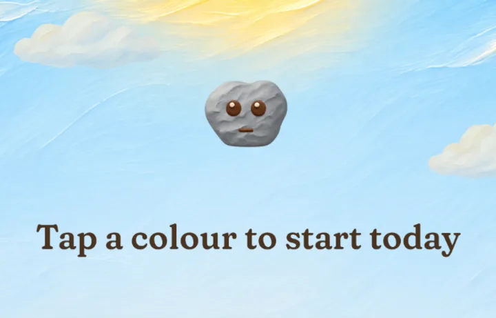

A food diary. No calorie counting.
Green, yellow or red. You decide what each one means.


One tap from your Home Screen.
Log without opening the app. By day or by night.


Its face follows your day.
Beaming, calm or plainly neutral. It never frowns.

Every morning starts small.
No streaks to lose. A missed day breaks nothing.
Why so simple?
97%
of days
with a short checklist
49%
of days
logging every food
Small pilot study. It tested the method, not Green Blob.
No account. No ads. No cloud.
Your diary stays on your device.

Is a food diary right for you?
Keeping a food diary isn’t right for everyone. If tracking makes eating feel more stressful, it’s fine to stop. Talking to someone you trust, or to a professional, can help.